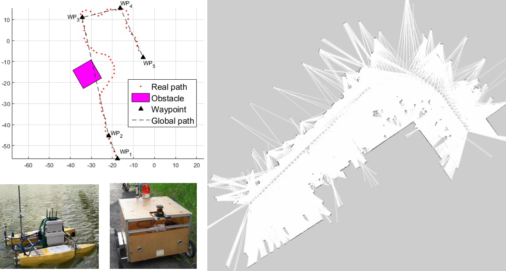

Welcome
 I'm a robotics engineer with focus on SLAM, Localization, State Estimation and Autonomous Vehicle. I finished my honors B.Eng. of Control Engineering & Automation in 2020 and since then pursue a research M.Eng. of the same major at University of Technology, Viet Nam National University Ho Chi Minh City (HCMUT, VNUHCM). I have been working as a research assistant at Vietnam Automation & Mechatronics Laboratory (ViamLab) since undergraduate period with a goal to realize full autonomy in a variety of unmanned vehicles.
I'm a robotics engineer with focus on SLAM, Localization, State Estimation and Autonomous Vehicle. I finished my honors B.Eng. of Control Engineering & Automation in 2020 and since then pursue a research M.Eng. of the same major at University of Technology, Viet Nam National University Ho Chi Minh City (HCMUT, VNUHCM). I have been working as a research assistant at Vietnam Automation & Mechatronics Laboratory (ViamLab) since undergraduate period with a goal to realize full autonomy in a variety of unmanned vehicles.
On this website you can find my publications and associated videos.
Links:
 GitHub -
GitHub -
 YouTube -
YouTube -
 Google Scholar
Google Scholar
Contact:
qha258@gmail.com
Project Highlights
Simulation of LOS Path Following and SBG Obstacle Avoidance for USV
This video demonstrates how USV follows predefined paths of different parameterization, be it straight or bspline. The vehicle's guidance system is governed by LOS law that outputs reference heading for R-modelled sliding-mode heading controller to track. To avoid obstacle, SBG is implemented, making decision based on measurements from a 2D LiDAR.
This work is part of my upcoming collaboration with ViamLab to realize autonomy in environmental monitoring for surface vessels.
2D LiDAR SLAM in Outdoor Environments
This video demonstrates the performance of a 2D LiDAR SLAM in both synthetic and real environments. By taking advantage of robust weighting scheme, sliding-windowed optimization, fast scan-matcher and parallel computing, the proposed system not only delivers stable performance in cluttered surroudings but also meets real-time constraint.
This work is part of my bachelor thesis at HCMUT, VNUHCM, 2020.
Guidance and Control of Delivery AGV
This video demonstrates how a delivery AGV receives command from a monitor GUI and automatically drives itself towards the desired destination. To retrieve position and orientation, the vehicle relies on a RTK-GPS base receiver and an AHRS unit. Autonomous driving capability is then realized by LOS path following and PID heading control.
This is the second generation of our AGV. We inherit and enhance a great deal of mechanical, electrical and algorithmic design from the first version, which is extensively documented in the below paper.
This work is part of our project, namely Design and Control a Delivery AGV in Scientific Research for Student, funded by FEEE, HCMUT, VNUHCM in 2019.
Publications
2021
 Online Robust Sliding-Windowed LiDAR SLAM in Natural Environments
(P. Q. Ha, T. N. Huy, N. T. Toan, T. T. Phuc),
in 2021 International Symposium on Electrical and Electronics Engineering (ISEE), Ho Chi Minh City, Vietnam.
Online Robust Sliding-Windowed LiDAR SLAM in Natural Environments
(P. Q. Ha, T. N. Huy, N. T. Toan, T. T. Phuc),
in 2021 International Symposium on Electrical and Electronics Engineering (ISEE), Ho Chi Minh City, Vietnam.
 [link]
[link]
 [pdf]
[pdf]
2020
 Implementation and Enhancement of Set-Based Guidance by Velocity Obstacle along with LiDAR for Unmanned Surface Vehicles
(T. N. Huy, V. M. Hung, N. T. Cuong, P. M. Tam, P. Q. Ha),
in 2020 5th International Conference on Green Technology and Sustainable Development (GTSD), Ho Chi Minh City, Vietnam.
Implementation and Enhancement of Set-Based Guidance by Velocity Obstacle along with LiDAR for Unmanned Surface Vehicles
(T. N. Huy, V. M. Hung, N. T. Cuong, P. M. Tam, P. Q. Ha),
in 2020 5th International Conference on Green Technology and Sustainable Development (GTSD), Ho Chi Minh City, Vietnam.
[link]

Constructing Map and Collision-Free Path for Autonomous Vehicles
(P. Q. Ha, P. M. Tam),
Bachelor Thesis, HCMUT, VNUHCM.
Design and Control of Automated Guided Vehicle
(P. Q. Ha, T. N. Huy, T. T. Phuong),
in Applied Mechanics and Materials, vol. 902, pp. 33-42.
[link]